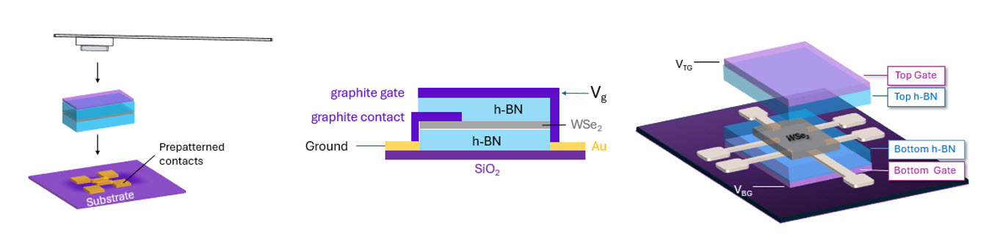

I am a researcher and recent graduate at University of California, Riverside, with a bachelors in Physics.
I look forward to additional research involvement and higher education in condensed matter physics or materials science / engineering, and potentially patent law dealing with the semiconductor industry.
Research Experience & Interests Overview
In my final years of my undergraduate degree, I have been working as a researcher in experimental condensed matter at The Joe Lab
under the Department of Physics and Astronomy, focusing on transport and optical properties of two-dimensional materials within heterostructure devices.

Through extensive laboratory experience, I have become an adaptable and dedicated researcher, especially driven by my fascination and curiosity to understand and expand the novelty in science
behind modern technological advancements.
Pivoting from a biological science background and having trained starting lab members with differing backgrounds, I also have a desire to help in pushing
the boundaries of multidisciplinary knowledge to bridge gaps between fields. I would like to help in overcoming conventionally
steep learning curves through making research and its applications easily understandable and approachable, whether through meaningful mentorship, or merging art and science to model difficult concepts.
At a larger scale, I am also interested in patent law to protect these accumulated research works and their important applications.